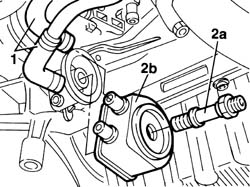
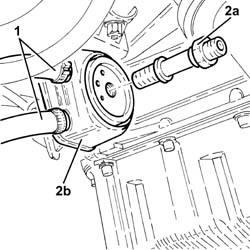
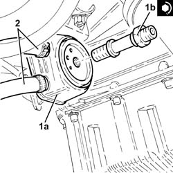

1084C20 radiant mass for engine oil cooling - r + r
- Path
- Procedures > 10 ENGINE > 1084 ENGINE LUBRICATION > 1084C engine oil cooling circuit > 1084C20 radiant mass for engine oil cooling - r + r
- Kind
- repair procedure (removal / refitting; the operation number is the code)
- Applies to
- all engines; all production periods
- Interactive page
- https://sloeber94.github.io/elrnDB-fDbl/en/#/2584477
Applies to: all engines; all production periods
 Removing
Removing
 Refitting
Refitting7055B54 under-engine guard - r r
Position a suitable container beneath the heat exchanger to collect the coolant fluid.
1. Disconnect the engine coolant inlet and outlet pipes to the heat exchanger.
2. Unscrew retaining pin (2a) and remove heat exchanger (2b).

Applies to: all engines; all production periods
Removing
RefittingPosition the vehicle on the ramp.
Proceed with the removal 7055B54 under-engine guard - r r .
Proceed with the removal 1084B30 engine oil filter r r .
1. Loosen the bands and disconnect the engine coolant inlet and outlet pipes from the engine oil cooling radiator.
2. Undo the connector (2a) and remove the engine oil cooling radiator (2b).

Applies to: all engines; all production periods
Refitting
RemovingFit the heat exchanger to the front oil pump cover.
Tighten the heat exchanger retaining fitting to torque.
 | Fastening | Component | Ø | Value (daNm) |
|---|---|---|---|---|
- | Connector | OIL COOLING RADIATOR | M20 | 6 |
Connect the engine coolant inlet and outlet pipes to the engine oil heat exchanger.
0010T21 coolant check density and top up if necessary
Applies to: all engines; all production periods
Refitting
Removing1. Refit the engine oil cooling radiator (1a) and secure by tightening connector (1b) to the recommended torque.
| Fastening | Component | Ø | Value (daNm) |
|---|---|---|---|---|
1b | Connector | OIL COOLING RADIATOR | M20 | (Front crankcase cover side) 5.4 ÷ 6.6 |
2. Connect the engine coolant inlet and outlet pipes to the oil cooling radiator and tighten the collars.

Applies to: all engines; all production periods
Proceed with the refitting 1084B30 engine oil filter r r .
Proceed with the refitting 7055B54 under-engine guard - r r .
Refill the engine oil lubrication system 0010T12 engine oil and filter replace .
Refill the engine oil cooling system 0010T20 coolant change .
Remove the car from the ramp.